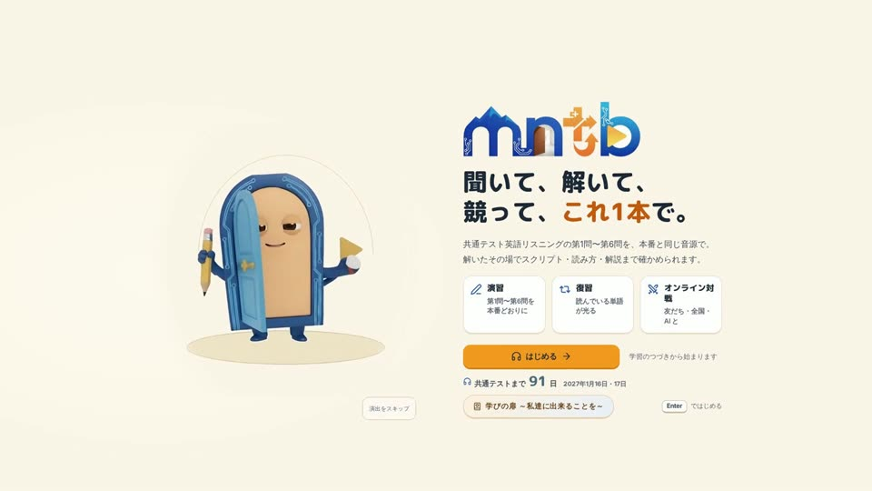
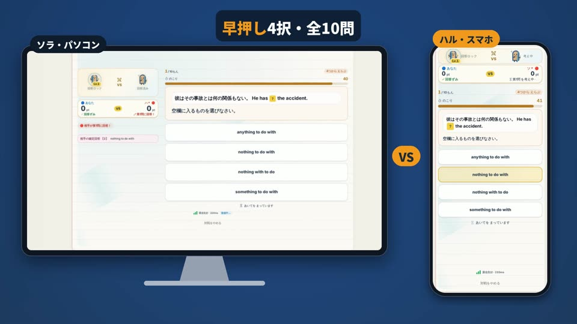

共通テスト英語リスニングの演習は、
聞く・解く・確かめる・競うまで、
このアプリ1本で完結します。
作ったのは、受験を終えた大学生2人です。
「聞き取れた！」を、毎日ひとつずつ。

紹介動画（実際の画面の録画）より 聞く → 採点 → 解説 → 対戦
作ったのは、受験を終えた大学生2人です。
「聞き取れた！」を、毎日ひとつずつ。

紹介動画（実際の画面の録画）より 聞く → 採点 → 解説 → 対戦

番号つきの黄色の部分が「聞き取りの決め手」です。正解を選ぶ根拠になった英文を示します。
設問の番号を押すと、その設問の解説に移ります。
スクリプトを見ながら、音声をもう一度聞けます。0.75倍のゆっくり再生もできます。
解いた直後に根拠の英文まで戻れるので、1回のアウトプットごとに「どこを聞き落としたか」まで分かります。
画面は第4問Bの解説。決め手は第4問A〜第6問Bの全大問（120音源）に付いています。
| AIと対戦 | ログインせずに、すぐ始められます。 |
|---|---|
| フレンド | 4文字の合言葉で友だちを呼び、1対1で戦います。 |
| 全国対戦 | ログインした受験生どうしで戦い、勝敗でランクが動きます。 |
正解で60点、速く答えるほどボーナスが付きます。

対戦で間違えた問題は復習ノートに入り、あとで解説と一緒に聞き直せます。

早押し4択・全10問スマホとパソコンの2台で、実際に全国対戦した録画です。
右のQRコードからアプリを入れて、Google か Apple でログインして試します。
「演習する」→「英語リスニング」→「第4問 B」と進み、1大問を解きます。
解き終えたら「詳しい結果を確認する」を押し、スクリプトの黄色の部分を見てください。
連絡先 mntobira@gmail.com

App Store（iPhone）
Google Play（Android）